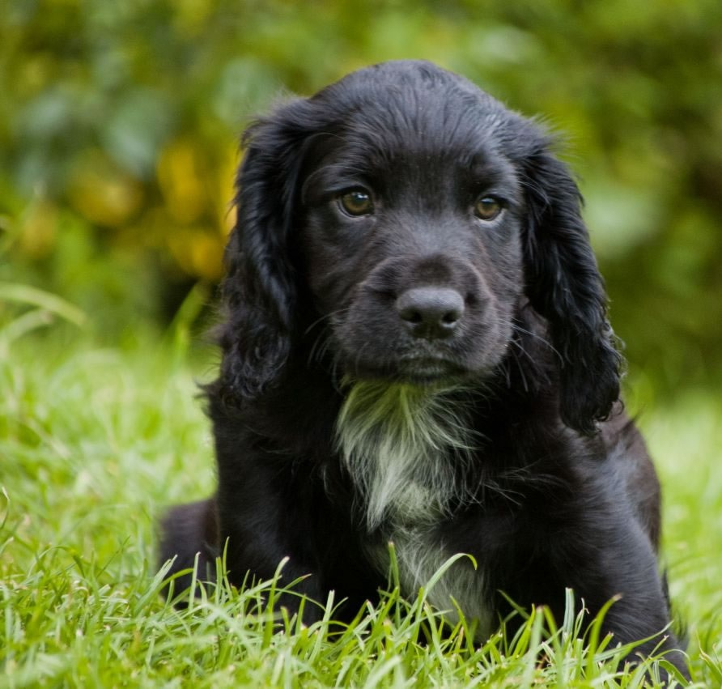

It's Good for Your Health!
There are so many health benefits that come with getting a new pet, especially a new puppy. Whether curiously exploring or just needing exercise, puppies are always on the move. Keeping up with them will definitely force you to stay active, not to mention all the walks you'll be going on and playing you'll be doing. This could help with weight loss as well.
Puppies are also a good stress relief. They make us happier and can calm us down. Social isolation is another common feeling people have which can be eased with a puppy. Pets help our sense of belonging, they aren't called "man's best friend" for nothing!
|
|

|
{kind=link}
{kind=link}
Stitch Needs a Friend!
Our current dog, a 10 year old Miniature Schnauzer named Stitch, is the only pet we currently have. He is extremely playful, especially for such an older dog. He loves playing with squeaky toys, but loves his tennis ball the most. While he does play a lot, he also sleeps a lot too. I think that if Stitch had another dog to play with he might be more active and healthier. A little puppy would really get Stitch's attention and probably keep him playing and busy.
I know that introducing a new puppy to your current pets can be difficult, but I really believe that Stitch will adjust quite well to having a new puppy around. Stitch used to live with me and my family (before moving to St. Louis), and when we got a new puppy, a Cocker Spaniel named Balto, he was reluctant at first, but eventually they became the best of friends!
|
|

|
{kind=link}
{kind=link}
You Love Puppies!
Pet dogs have always been part of your life! Your last two family dogs were really important to you and were part of your life for a really long time. Now that Stitch lives with you, he's your best friend, and you really enjoy having him around. You're constantly playing with him and always giving him treats, even when he's already had so many! If we got a new puppy, you would have another little friend running around to play with.